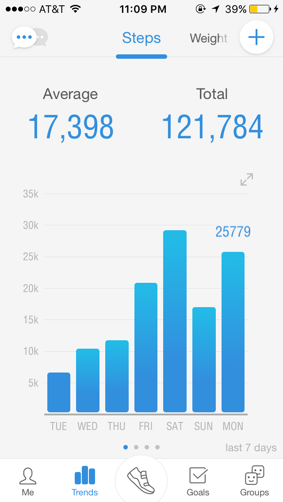
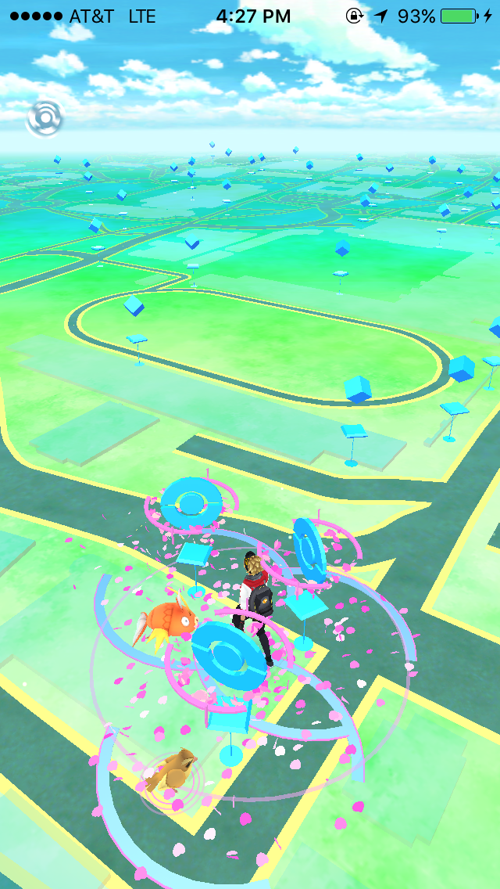
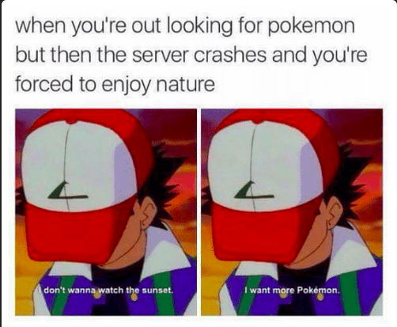

As with everything, there are positives and negatives to Pokemon Go, and below I'll share my thoughts and observations. After going home for about a month, I'm back in Berkeley to take CS70, which is the last prerequisite that I need to declare my major. Having started summer school about three weeks ago, I can definitely see why CS70 is generally regarded as the most difficult of the lower division CS courses. The class focuses on logic and discrete mathematics, which is something that I haven't really been exposed to before, and since it's a summer class, things have been moving at a very fast pace. In the span of three weeks, we've covered approximately the same amount of material that the class would have covered in a month and a half. Our midterm was last Friday, so naturally I wanted to wind down after three weeks of nonstop schoolwork. And coincidentally, Pokemon Go was released that Thursday, so I found something that I would enjoy relaxing with.
Growing up, Pokemon was a huge part of my life. I had amassed an entire collection of the Pokemon trading cards when I was younger, and I religiously played Pokemon up until the middle of high school. I had most of the games: Pokemon Emerald, Pearl, Silver, and Gold, as well as the Pokemon Mystery Dungeon series. At one point in middle school, I even brought my Nintendo DS to class every day just so that I could train my Pokemon. Needless to say, I've been hyped about the new Pokemon game since it was announced a while back, and the day it was released in North America, I downloaded it. This was the game that fulfilled my childhood dreams - I could finally walk around the real world and catch Pokemon! Of course, you can't actually catch Pokemon since they aren't real, but playing this game sort of simulates being a Pokemon trainer. I've experienced the slight anxiety that Ash must get after he throws a pokeball, and the feeling of excitement when I'm looking for a Pokemon that I haven't caught yet. And while I am 18 years old at the time of this post, I've had a lot of fun with this game so far.
The release of Pokemon Go has created a phenomenon. Everyone that I know is commenting on how much more active they've been since its release, myself included. In the span of the five days that I've been playing this game, I've walked way more than I normally would, averaging about 20,000 steps per day. To put that into perspective, I walk about 10,000 steps per day when school is in session, and this includes walking across campus several times to go to my various classes. And while I do wander Berkeley campus in search of pokemon, I've also gone to San Francisco, the Berkeley Marina, and Emeryville - all places that I normally would not make trips to - in order to catch pokemon. In addition to encouraging me, the player, to be more physically active, it has also helped me explore places that I haven't visited before.
Something that I really appreciate about this game is the fact that catching pokemon is not competitive, in the sense that the same pokemon can be caught by multiple people. As a result, it forms a camaraderie between players - people will actively help each other and share the various locations of desirable pokemon. In fact, it has caused the creation of several Facebook pages where we update each other about various Pokemon sightings across campus. Additionally, I've gone on several spontaneous "hunting" trips where I just found other people who were looking for the same pokemon, and after we found it we'd spend a few hours looking for more.
Pokemon Go is so popular that even local stores/restaurants are leveraging the game in order to attract more customers. In the game, there's an item called a "lure module", which basically spawns more pokemon in a particular spot. Several boba places have started advertising by saying that they will be putting out lure modules near their restaurant, and so far this tactic has proved to be extremely successful.  Honestly, I think it's hilarious (but also genius) that local shops are using this to promote their business, but it also shows just how popular this game is within the college demographic. The pictures that I took above don't even contain half of the people who were present outside the boba place.
For all the positive things that this game brings about, there are also negative points to note about Pokemon Go. First of all, while people are getting outside and excercising more, they're also spending most of that time looking at their phone screen. And though the loading screen does say to be aware of your surroundings, a lot of people don't follow that instruction. In fact, some people are so engrossed with their phones while walking that they don't take notice of other pedestrians and run into them. In the news, there have been reports of disastrous car crashes because people are just playing Pokemon Go while driving, and I don't need to point out why this is a horrible idea.
This game also has a lot of bugs, most of which seem to extend from server issues. Oftentimes, I couldn't log into the game because the server couldn't handle the large influx of people trying to log on at the same time. Playing the game for the first few days was pretty frustrating, since I would be booted from the server from time to time. In fact, this has actually spawned several memes about the game.
There are also other times where the game would freeze when attempting to catch a pokemon; I think that this problem is also related to the server, and it has happened more than once that I would encounter a pokemon I haven't seen before and after I threw my pokeball at it, the game just froze and I would have to restart the app, eventually losing the pokemon. However, this problem is understandable since the game has only been out for a short while, and Niantec, the company who made the game, didn't expect such a large amount of people to be playing the game, and I trust that as time goes on, these server issues will be fixed.